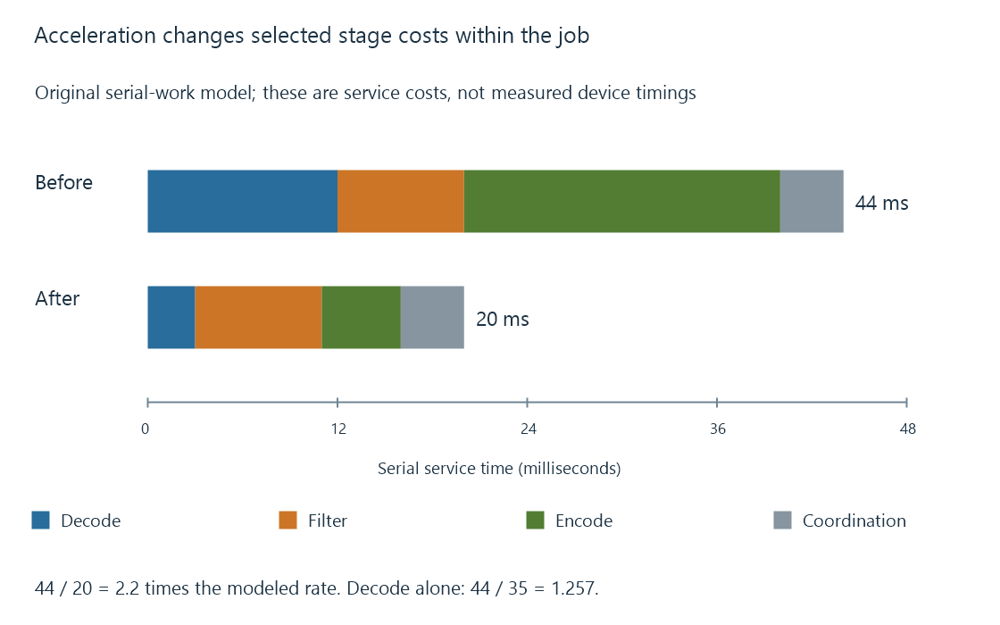

What hardware acceleration does for media
Media hardware acceleration assigns supported decoding, picture processing or encoding work to specialized device paths within a larger playback or conversion pipeline.
Media hardware acceleration changes where particular processing work is performed. A supported video decoder can reconstruct pictures using a media engine; a processor can scale or transform those pictures; an encoder can create a new compressed representation.
In an Emby video-conversion session, these are separate opportunities. The server still coordinates source access, selected streams, timing and delivery.
Start with the work the session requires
A Direct Play session does not need the server to decode and encode the video merely because acceleration is enabled. Its receiving player still performs its own decoding and presentation.
A conversion session instead has a specific input and target. Its work can include decoding, scaling, colour processing, subtitle composition and encoding. Supported hardware paths can take responsibility for particular stages.
| Work | Possible execution path |
|---|---|
| Encoded video reconstruction | Specialized decoder or CPU implementation |
| Picture transformations | Media processor, GPU compute or CPU filter |
| New compressed video | Specialized encoder or CPU implementation |
| File/session and output coordination | Application and operating-system work |
An acceleration API is how the application reaches a suitable device path. The API name, hardware block and codec name describe different parts of that relationship.
The saved work depends on the affected stages
Use an original serial-cost model for one picture:
| Stage | Initial cost | Cost after selected acceleration |
|---|---|---|
| Decode | 12 ms | 3 ms |
| Filter | 8 ms | 8 ms |
| Encode | 20 ms | 5 ms |
| Other coordination | 4 ms | 4 ms |
| Total | 44 ms | 20 ms |
These are invented service costs. They do not describe overlap, actual GPU timings or a real Emby session.
The modeled improvement is 44 / 20 = 2.2. Accelerating only decoding gives a different result: 3 + 8 + 20 + 4 = 35 milliseconds, or about 1.257 times the original rate.

The example makes the remaining work visible. Once the expensive encoder is faster, the unchanged filter and coordination account for a larger share of the total.
Hardware support is a configuration question
A usable decoder needs the selected codec configuration, including relevant profile, bit depth, dimensions and picture format. An encoder needs the target configuration. The stages also need compatible memory and processing relationships.
A device can decode the source but lack the requested encoder or filter path. A driver can expose one operation while the application's build uses another interface. Those are specific configuration facts, rather than one device-wide acceleration switch.
Emby's hardware overview identifies its platform routes. The hardware pipeline develops how successful stages are connected into a useful result.
Capacity is measured across the complete job
A faster video stage can free CPU time, shorten conversion or make concurrent work possible. The useful result depends on the rest of the selected pipeline and the delivered media deadline.
See Also
- The hardware decode-filter-encode pipeline
- Fixed-function media engines
- GPU compute and video processing
- Hardware decoding and software decoding
- Hardware encoding and software encoding
- Video transcoding in Emby